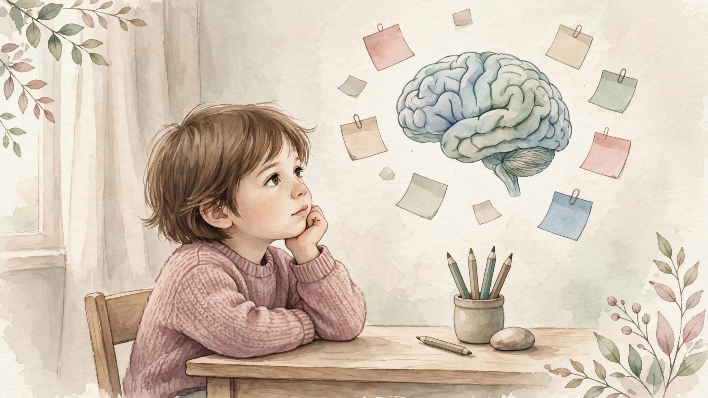

Radno pamćenje: skriveni temelj uspješnog učenja

Što je radno pamćenje?
Radno pamćenje omogućuje nam da zadržimo informacije dovoljno dugo da ih možemo koristiti i njima manipulirati tijekom učenja, razumijevanja jezika i svakodnevnih zadataka.
Kako je povezano s čitanjem i pisanjem?
Da bi dijete spojilo glasove u riječ ili rastavilo riječ na glasove, mora ih zadržati u pamćenju i njima manipulirati.
Ako dijete teško zadržava glasove u pamćenju, čitanje i pisanje mogu postati zahtjevniji. Zato je dobro razvijeno radno pamćenje jedan od važnih temelja čitanja i pisanja.
Radno pamćenje nije važno samo za čitanje i pisanje. Sudjeluje u gotovo svim aktivnostima učenja i svakodnevnog funkcioniranja: pomaže pratiti upute, razumjeti razgovor, učiti nove informacije, rješavati probleme i organizirati aktivnosti.
Kako prepoznati teškoće?
Dijete s teškoćama radnog pamćenja često:
Teškoće s radnim pamćenjem mogu utjecati na učenje, praćenje nastave, čitanje, pisanje, matematiku i svakodnevno funkcioniranje.
Kako poticati radno pamćenje?
Trebate podršku?
Radno pamćenje razvija se kroz svakodnevne aktivnosti, igru i postupno povećavanje zahtjeva. Rado ćemo vam pomoći procjenom i planom.
Rezerviraj termin